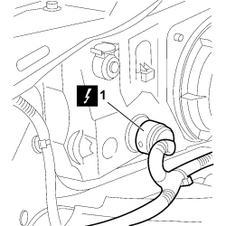
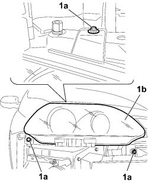

5540B71 RIGHT FRONT LIGHT CLUSTER WITH DIRECTION INDICATOR - R.R.
- Path
- Procedures > 55 ELECTRICAL EQUIPMENT > 5540 EXTERIOR LIGHTING > 5540B HEADLAMPS > 5540B71 RIGHT FRONT LIGHT CLUSTER WITH DIRECTION INDICATOR - R.R.
- Kind
- repair procedure (removal / refitting; the operation number is the code)
- Applies to
- all engines; all production periods
- Interactive page
- https://sloeber94.github.io/elrnDB-fCrm/en/#/194000743
Applies to: all engines; all production periods
 Removing
Removing
 Refitting
Refitting- Turn the ignition key to the OFF position.
- Open the bonnet.
- Disconnect the negative battery terminal.
Description | Connector | |
|---|---|---|
BATTERY |
Op. 7040D30 ENGINE BAY FRONT BEAM COVER - R R
Op. 7055A43 CENTRE FRONT GRILLE - R.R.
Op. 7055B90 LEFT FRONT WHEEL ARCH LINER - R.R.
Op. 7055B91 RIGHT FRONT WHEEL ARCH LINER - R.R.
1. Disconnect the electrical connection.

Applies to: all engines; all production periods
Description | Connector | |
|---|---|---|
1 | RIGHT HEADLAMP |
1. Undo the three bolts (1a) fixing the light cluster (1b) and remove the unit from the vehicle.

Applies to: all engines; all production periods
Refitting
Removing- Check that the light cluster is not damaged.
- Place the light cluster in position and tighten the three bolts securing the unit to the vehicle.
- Connect the electrical connection.
Description | Connector | |
|---|---|---|
RIGHT HEADLAMP |
Op. 7055B91 RIGHT FRONT WHEEL ARCH LINER - R.R.
Op. 7055B90 LEFT FRONT WHEEL ARCH LINER - R.R.
Op. 7055A43 CENTRE FRONT GRILLE - R.R.
Op. 7040D30 ENGINE BAY FRONT BEAM COVER - R R
- Connect the negative battery terminal once again.
Description | Connector | |
|---|---|---|
BATTERY |
Topics linked from this page (7)
- 7040D30 ENGINE BAY FRONT BEAM COVER - R R
- 7055A43 CENTRE FRONT GRILLE - R.R.
- 7055B90 LEFT FRONT WHEEL ARCH LINER - R.R.
- 7055B91 RIGHT FRONT WHEEL ARCH LINER - R.R.
- 7210E10 R.R. FRONT BUMPER
- A001 BATTERY
- F011 RIGHT HEADLAMP